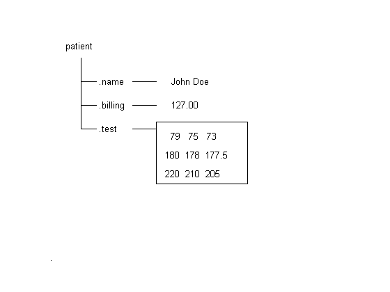
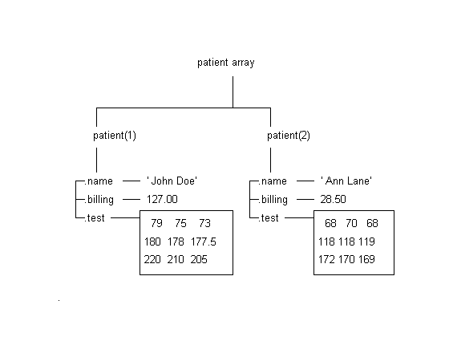
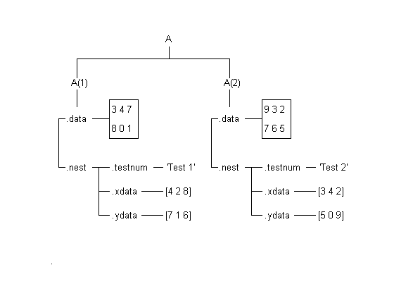

Structures
MATLAB® supports specialized data constructs such as structures and cell arrays. MATLAB structures are array-oriented data constructs. They provide a convenient way to group related data of different types.
Structures are MATLAB data constructs with named "data containers" called fields. The fields of a structure can contain any kind of data. For example, one field might contain a text string representing a name, another might contain a scalar representing a billing amount, a third might hold a matrix of medical test results, and so on.
% Draw a visualization of a structure.
strucdem_helper(1);
 You can construct a structure simply by assigning values to its fields. With these commands, we create the structure we've depicted.
patient.name = 'John Doe';
patient.billing = 127.00;
patient.test = [79 75 73; 180 178 177.5; 172 170 169];
patient
patient =
name: 'John Doe'
billing: 127
test: [3x3 double]
You can also build an array of structures to collect similar items together. A structure array has the following properties:
* All structures in the array have the same number of fields. * All fields have the same field names.
You can build a structure array by adding subscripts after the structure name.
patient(2).name = 'Ann Lane'; patient(2).billing = 28.50; patient(2).test = [68 70 68; 118 118 119; 172 170 169]; % Update the visualization. strucdem_helper(2);
You can access any field in a structure as easily as you access a regular variable. For example, we can draw a bar graph of the test data for patient(1).
bar(patient(1).test)

The FIELDNAMES function returns the field names for a structure array.
You can remove a given field from every structure within a structure array using the RMFIELD function.
fnames1 = fieldnames(patient)
patient2 = rmfield(patient,'test');
fnames2 = fieldnames(patient2)
fnames1 =
'name'
'billing'
'test'
fnames2 =
'name'
'billing'
Structures can be nested. You can use the STRUCT function or direct assignment statements to nest structures within existing structure fields.
A = struct( 'data', {[3 4 7; 8 0 1], [9 3 2; 7 6 5]}, ... 'nest', {... struct( 'testnum', 'Test 1', ... 'xdata', [4 2 8], 'ydata', [7 1 6]), ... struct( 'testnum', 'Test 2', ... 'xdata', [3 4 2], 'ydata', [5 0 9])}); % Update the visualization. strucdem_helper(3)
Here are some more structure commands in action. For further information on structures, please consult the HELPDESK or the MATLAB Manual.
anotherfield = 'myfield'; st = struct('yourfield','foo',anotherfield,'foo'); st.(anotherfield)='bar'; st = rmfield(st,anotherfield); if isfield(st,anotherfield); disp(st) end